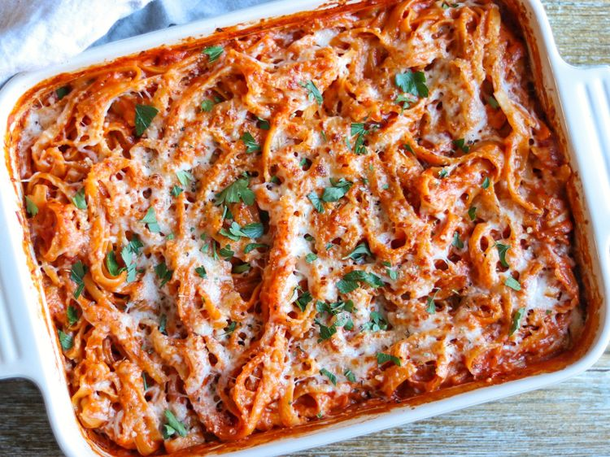

Alfredo Marinara Pasta Bake

Description
This comforting pasta bake features fettuccine coated in a rosy pink sauce, a perfect blend of marinara and alfredo.
The sauce is cheesy without being overly rich, brightened by the tomatoes. This true "dump and bake" dish requires no pre-boiling,
and a final broil creates a slightly browned, crisp topping.
It's a simple, luxurious, and deeply satisfying meal.
Ingredients
- 1 (24 ounce) jar marinara sauce
- 1 (15ounce) jar Alfredo sauce
- 2 cups of water
- 1 (1 pound) package fettuccine
- 2 tablespoons extra-virgin olive oil
- 1 teaspoon Italian seasoning
- 6 ounces low-moisture part-skim mozzarella, shredded
- 2 ounces Parmesan cheese, grated
- chopped fresh flat-leaf parsley
Directions
- Gater all ingredients
- Preheat the oven to 200 degrees C. Whisk together Marinara and Alfredo sauces with water until combined in a bowl.
- Add fettuccine to the bottom of a 9x13-inch boiler-safe baking dish. Drizzle with oil and sprinkle with Italian seasoning. Toss until coated.
- Cover fettuccine with sauce mixture and toss gently to combine. Cover da dish tightly with aluminum foil. Bake in the preheated oven, stirring halfway through, until the pasta is tender, about 50 minutes; increase oven temperature to broil.
- Remove foil carefully and stir in 1 cup mozzarella and 1/4 cup Parmesan Cheese. Sprinkle with remaining mozzarella and Parmesan; Broil, uncovered, until cheese is melted and browned in spots, about 4 minutes.
- Garnish with parsley and serve immediately.
Home